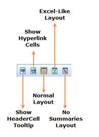

Figure 14: OLAP Grid Toolbar
Table 7: Toolbar Options
|
Option |
Description |
|
Show HeaderCell Tooltip |
Shows the tooltip on mouse hover in the header cell. |
|
Show Hyperlink Cells |
The grid’s hyperlink option is set accordingly on selection. |
|
Normal Layout |
Provides the normal layout of grid by placing the total below. |
|
Excel-Like Layout |
Provides the Excel like layout of grid by placing the grand total at the end. |
|
No Summaries Layout |
No total would be displayed at the bottom of the grid. |